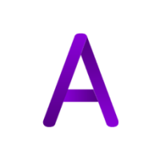

 M4cs Development
M4cs Development
Add to Cydia
Hosted Packages
EZLocations
EZLocation Module, turn the Lcoation on and off from CC
More info
EZRespring
A Respring button for your Control Center.
More info
EZSafeMode
A Safemode toggle for your Control Center. Requires Silo.
More info
EZUIcache
A UICache button for Control Center with Silo.
More info